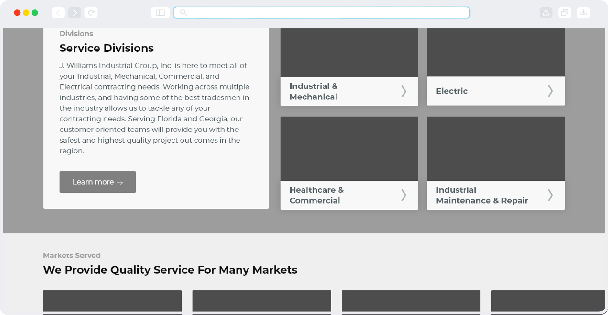
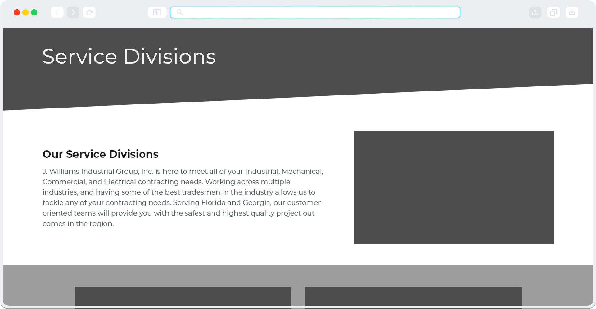
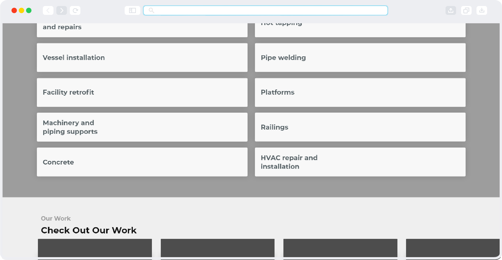
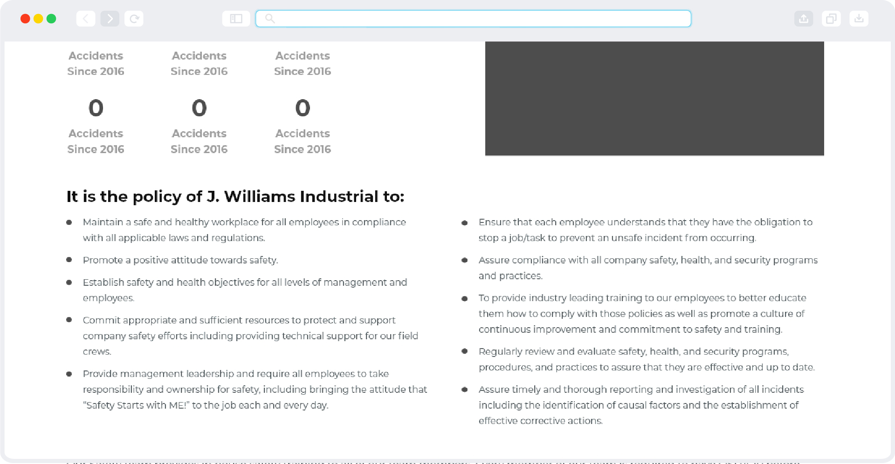
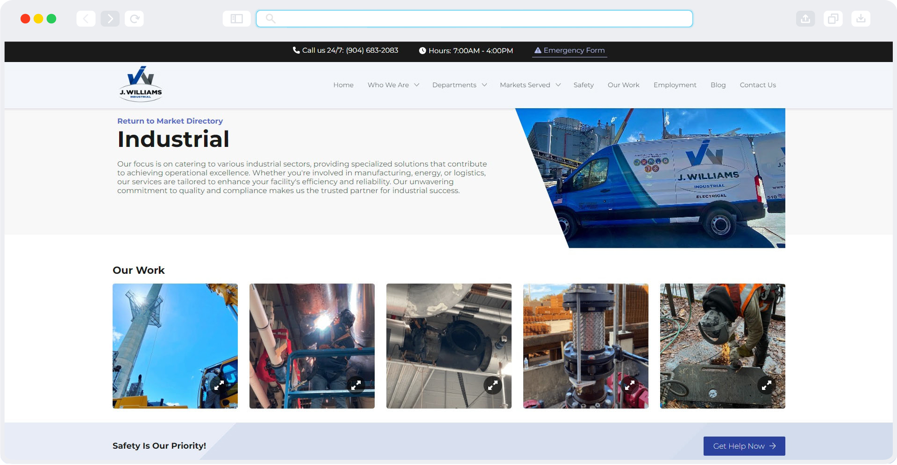
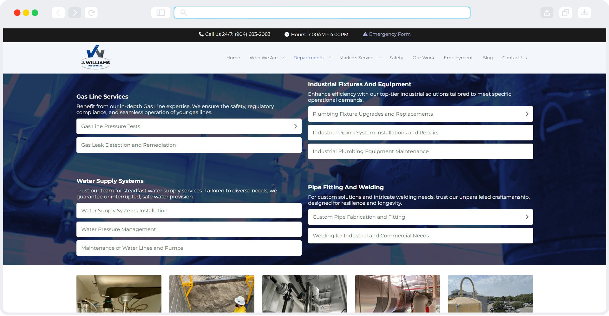
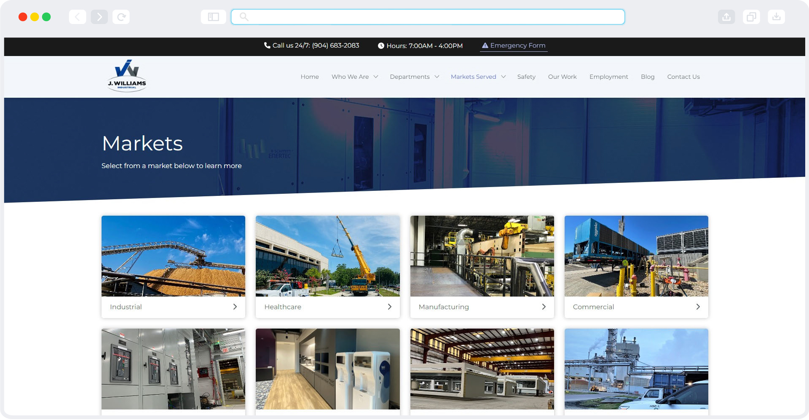
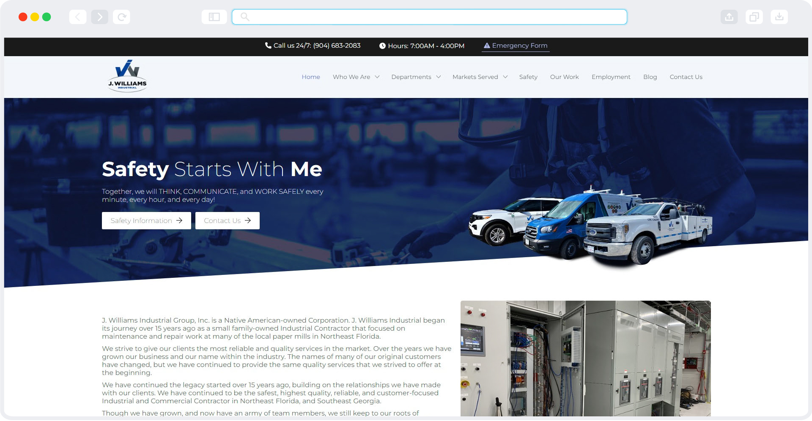

Challenges and Goals
There was a lot of information to organize on this website. Mostly, it had to do with all of the different industries served and the services provided. I had a tough time figuring out a good way to organize it all but I think it worked out well.
Challenges
- Create a design that was modern and organized.
- Lots of information to make digestable.
Goals
- Keep the design modern, engaging, and easy to follow.
- Make information scannable and easy to find.
- Have reusable components to cut down on dev time.
Wireframes
To begin, I conducted research on competitors and other key players in adjacent markets to see what types of things I might need to incorporate in the design and much needed inspiration. Upon completion, I started to lay out everything in the design. A few iterations were needed to get to the final product in terms of wireframes, but once that was done, I were able to move on to design phase.
   Design
Things really started to come together once images and color was added to the design. A few more changes had to be made in accordance with some modules the client wanted to add in after wireframes were completed. Due to the nature of the job, I wasn't given time to go back to wireframes to test things out so I had to just run with it and keep moving. This ended up changing the layout of some things due to a few modules now being conflicting, but I made it work.
   Takeaways
Though I am happy with the overall design, there are a few things I think I would change about it. The sections listing services works really well on mobile, but it's not quite as intuitive as I would like on desktop. As it is now, it is still perfectly useable though.